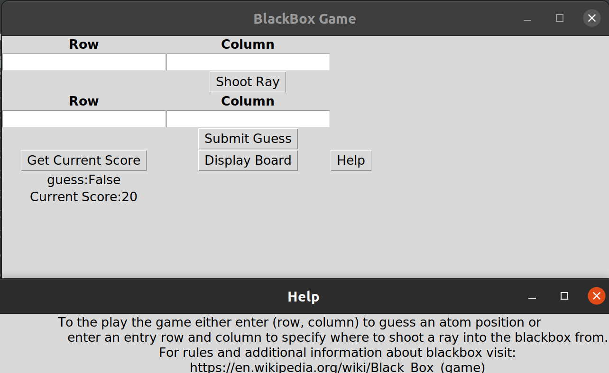

BlackBox
A game written entirely in python. Can be played at the gui or cli. Compiled to linux binary with pyinstaller.

pyShell
A python based shell with upload capability.

portScanner
A simple python script to scan for open ports on a system.

OSCP BoF Templates
A collection of python scripts used for buffer overflows.